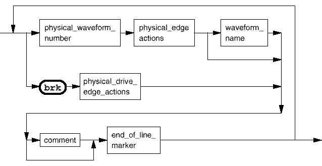

Pure waveforms (pure_waveforms)
When specifying a pure waveform, either a physical waveform or a break waveform may be specified. A break waveform is indicated by the brk keyword.
Note Only physical drive edge actions can be specified with a break waveform. If any
receive actions are specified, an error is reported.

physical_waveform_number |
A hexadecimal number (0 - 1f) defining a physical waveform number from 0 to 31. |
waveform_name |
Optional. Up to 6 alphanumeric characters. Reserved names are not allowed. These are: break, BREAK, c, C. The following characters are also not allowed: # ( ) , ; ? @ and *. |